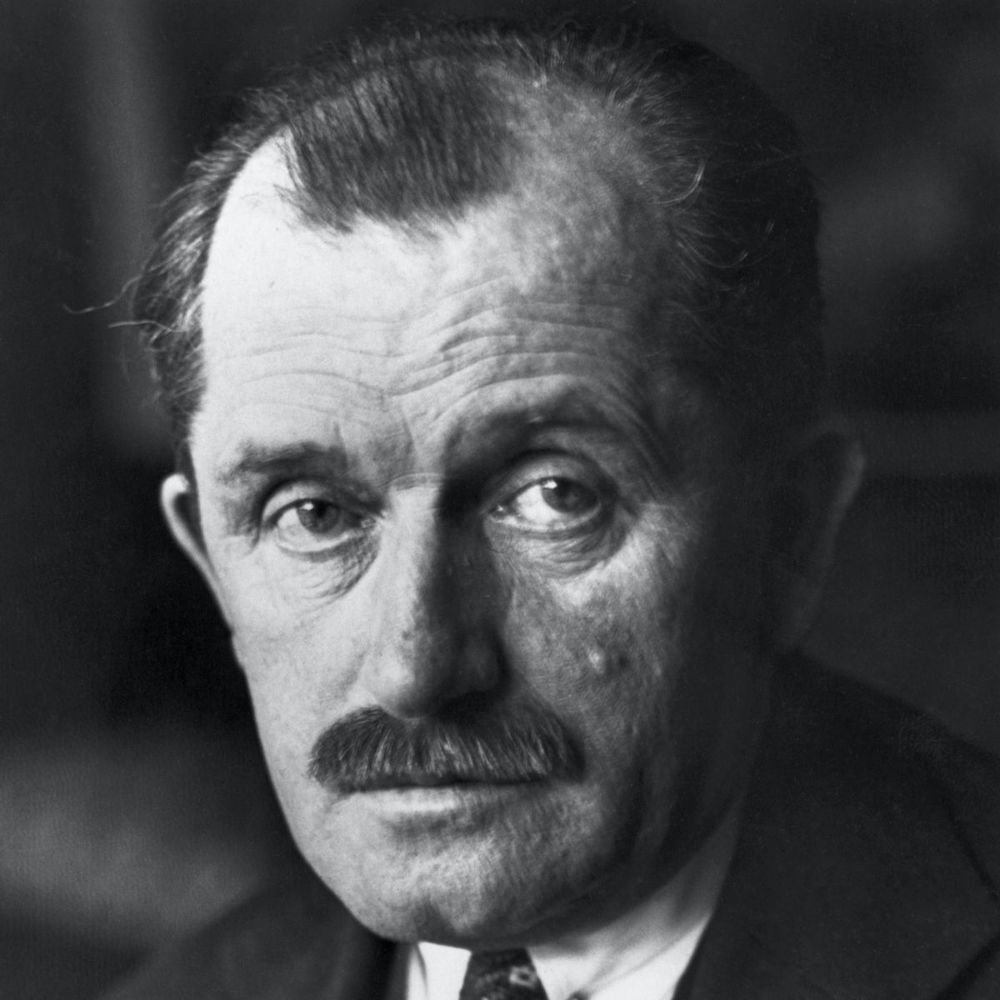

Ferdinand Porshce, born in September 1875, was a German-Bohemian. Following his father's career as a mechanic, he became an automotive engineer and founder of the Porsche AG. He is best known for creating the first gasoline–electric hybrid vehicle (Lohner–Porsche), the Volkswagen Beetle, the Auto Union racing cars, the Mercedes-Benz SS/SSK, and several other important developments and Porsche automobiles. |
|---|
At the age of 18, he was already employed and working on a project that 3 years later would come to fruition, creating a car that combined a gasoline engine and electricity, which was not popular due to the high cost of the components, which at the time were expensive. Therefore, he decided to invest in developing high-speed cars that won him recognized awards in Germany. However, this status in companies did not last long when the crisis of the great depression came and caused the company he worked for to go bankrupt. |
 |
|---|
It was then that he decided to found his own company, Porsche Gmbh, which started with 12 employees and began producing its models, one of which was the famous "Beetle" which was made at the request of Adolf Hittler for Germany, which was a success. After a few years, the first official model that bore the family name came out, the Porsche 356, which succeeded the famous Porsche 911. With its success in the luxury sports car market, the company took off and became one of the largest in the racing industry. |
|---|